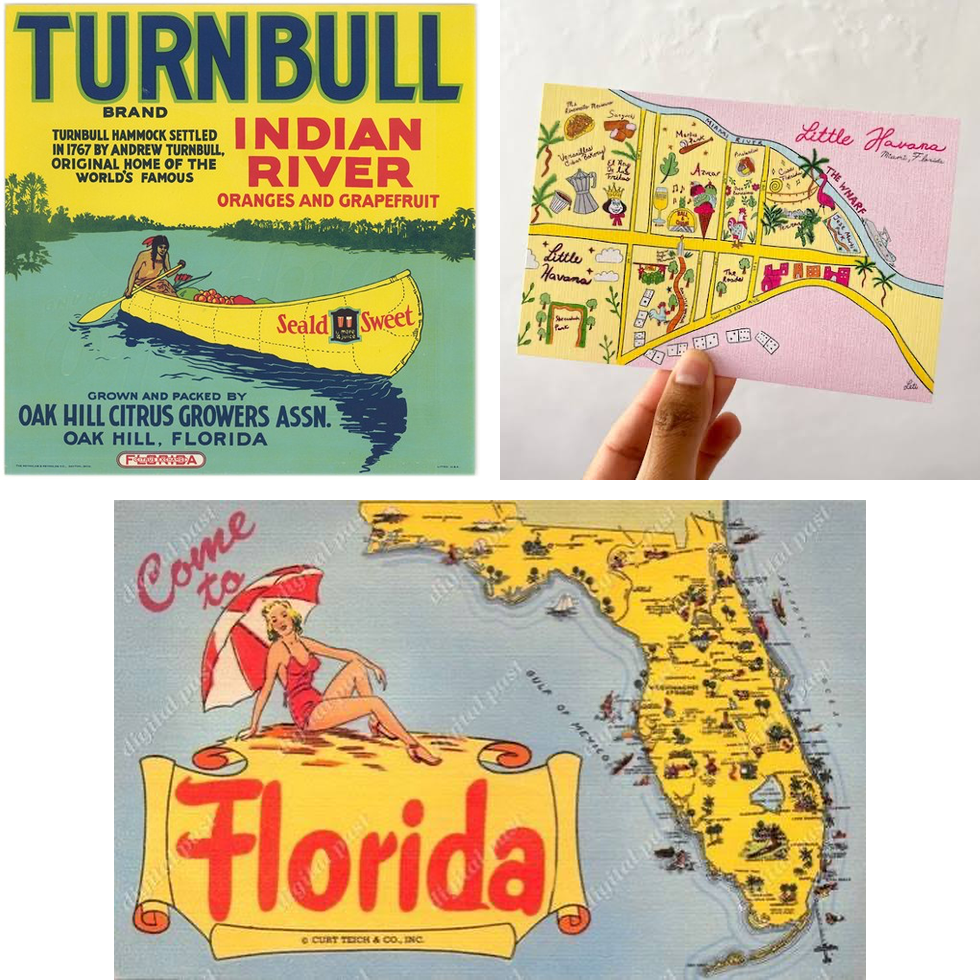
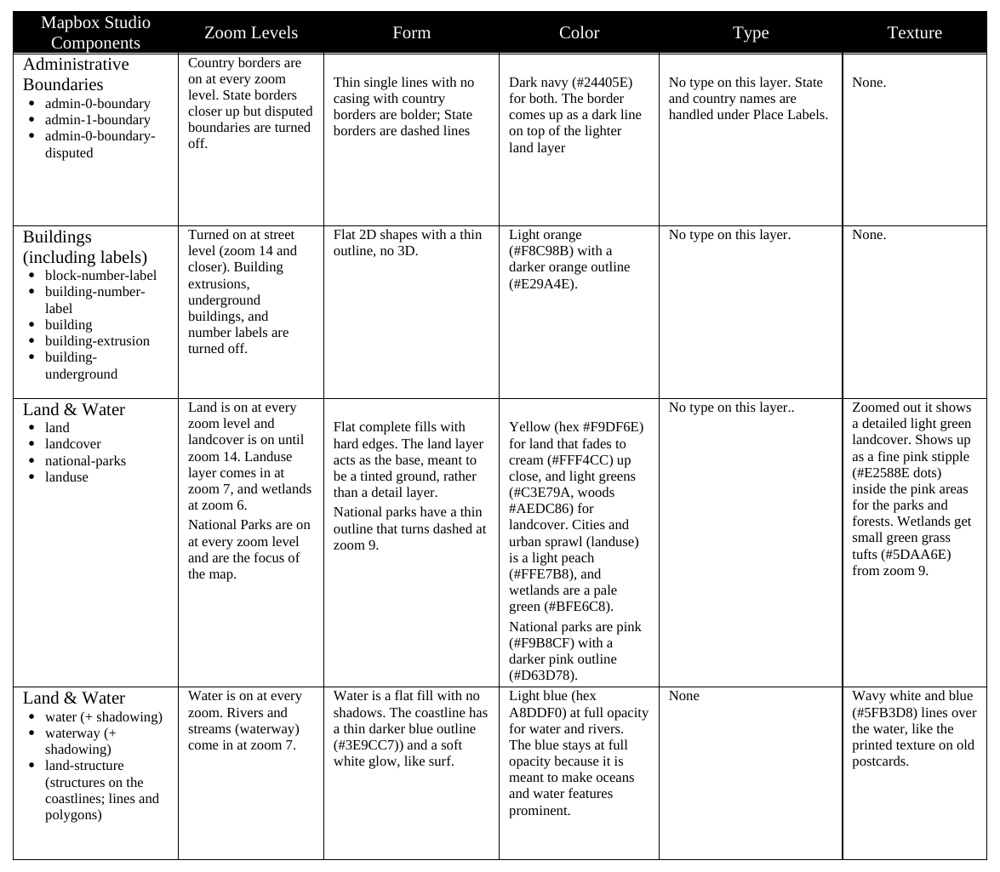
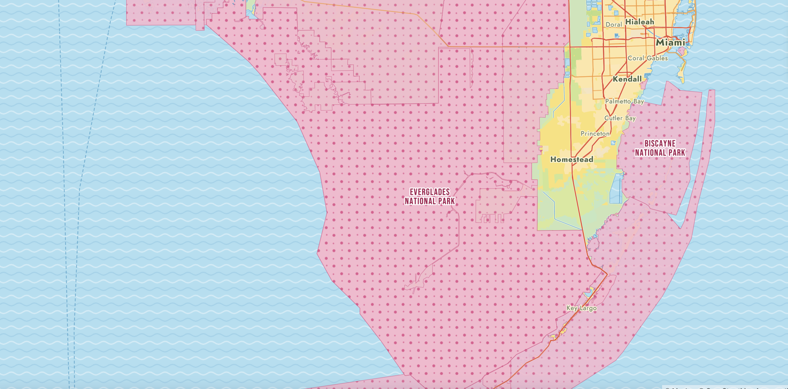
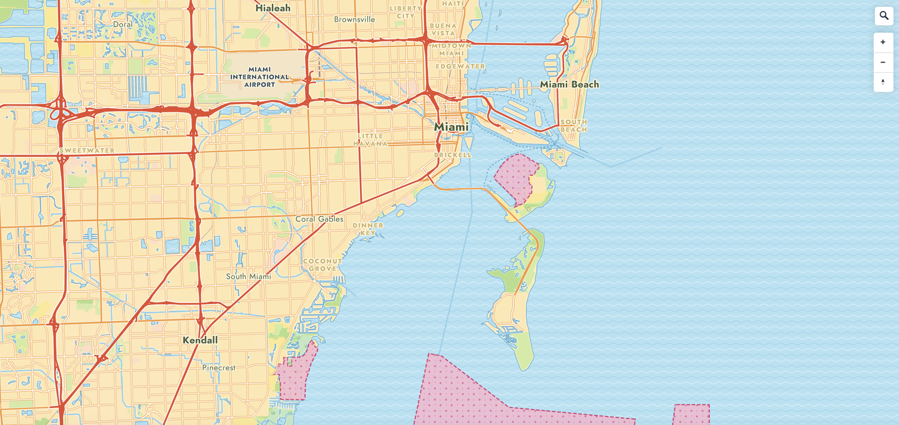
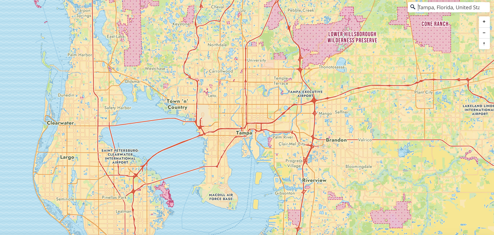
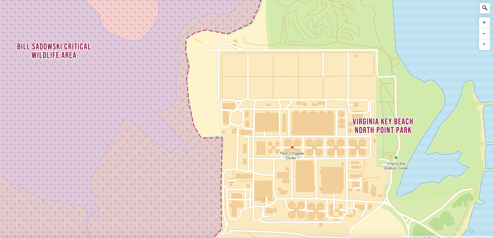

Vintage Florida Deco Map of Protected Lands
For this map I wanted to show Florida's national and state parks, preserves, and forests in the style of old South Florida tourist prints and Miami Deco postcards.

My inspiration board is the Little Havana postcard, the "Come to Florida" postcard, and the Turnbull citrus label. I took the flat yellow land, light blue water, pink, and bold geometric lettering from them.

My spec sheet shows the colors, fonts, and textures I used. I kept the colors light and bright and let the dark text and roads add the contrast. Cities and roads use Jost, a Futura-style font, and parks use Bebas Neue.




The Everglades and Biscayne are mostly pink, since almost all of it is protected land.
In Miami I wanted the street labels to feel like the Deco lettering on the postcards.
Around Tampa Bay you can see the small preserves tucked in between the towns.
Up close on Virginia Key you can see the pink dots and wavy water textures.
Credits:
Map created with Mapbox Studio
Data from OpenStreetMap
Fonts: Jost and Bebas Neue
Inspiration: Little Havana postcard, "Come to Florida" postcard, and Turnbull citrus label